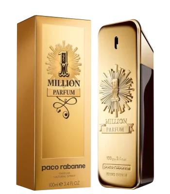

Eau de Perfume :
One Million
1 Million Parfum van Paco Rabanne is een Leerachtige geur voor heren. Dit is een nieuw parfum. 1 Million Parfum werd uitgebracht in 2020. 1 Million Parfum is gecreëerd door Quentin Bisch en Christophe Raynaud.
- 50 ml
- 100 ml
- 150 ml
€ 100
Boss
BOSS Bottled Parfum, voor dé man, de BOSS. Zijn raffinement is opvallend, zijn warmte inspirerend. Dit parfum voor mannen heeft een houtachtige, amberachtige geur.
- 50 ml
- 100 ml
- 150 ml
€ 115.60
Dolce Gabbana

Deze intense geur is mannelijk en aantrekkelijk, een statement van charisma en raffinement. Levendig en elegant.
- 50 ml
- 100 ml
- 150 ml
€ 150
212 Herrera

212 van Carolina Herrera is een bloemige, houtachtige musk-geur voor vrouwen. 212 werd gelanceerd in 1997. De neus achter deze geur is Alberto Morillas. Topnoten zijn Oranjebloesem, Cactusbloem, Bergamot en Mandarijn; hartnoten zijn Lelie, Freesia, Gardenia, Witte Camelia, Jasmijn, Lelietje-van-dalen, Roos en Pioenroos; Basisnoten zijn Muskus en Sandelhout.
- 50 ml
- 100 ml
- 150 ml
€ 100
Dior Homme

Dior Homme is een zeer aangename warme en poederige geur, die niet alleen geschikt is voor heren. Hij opent met lavendel en bergamot, maar meteen daarna ruik je de poederige iris op een warme ondergrond.
- 50 ml
- 100 ml
- 150 ml
€ 170
Calvin Klein

Calvin Klein Inc. (vaak afgekort tot Calvin Klein) is een designmodebedrijf dat in 1968 werd opgericht door de Amerikaanse modeontwerper Calvin Richard Klein.
- 50 ml
- 100 ml
- 150 ml
€ 75
Lacoste Blue
Blue Lacoste is een intense en krachtige geur voor mannen. Top: Pepermunt , Roze, Pompelmoes. Midden: Aromatische salie, Toetsen van oranjebloesem.
- 50 ml
- 100 ml
- 150 ml
€ 60
Villain
Villain Snake Perfume for Men 100ml | Ultra Long Lasting | Musk | Strong, Smoky, Sexy and Masculine| Premium EAU DE PARFUM| Best Gift for BoyfriendVillain Snake Perfume for Men 100ml | Ultra Long Lasting | Musk | Strong, Smoky, Sexy and Masculine| Premium EAU DE PARFUM| Best Gift for Boyfriend
- 50 ml
- 100 ml
- 150 ml
€ 45